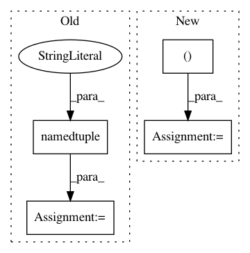

4bcf6fdd93291a1bfba3c7038fe30a7338870968,onmt/models/SRU.py,,,#,72
Before Change
SRU_BiFWD_FUNC = sru_mod.get_function("sru_bi_fwd")
SRU_BiBWD_FUNC = sru_mod.get_function("sru_bi_bwd")
stream = namedtuple("Stream", ["ptr"])
SRU_STREAM = stream(ptr=torch.cuda.current_stream().cuda_stream)
class SRU_Compute(Function):
After Change
}
}
SRU_FWD_FUNC, SRU_BWD_FUNC = None, None
SRU_BiFWD_FUNC, SRU_BiBWD_FUNC = None, None
SRU_STREAM = None
In pattern: SUPERPATTERN
Frequency: 4
Non-data size: 4
Instances
Project Name: OpenNMT/OpenNMT-py
Commit Name: 4bcf6fdd93291a1bfba3c7038fe30a7338870968
Time: 2018-05-22
Author: pltrdy@gmail.com
File Name: onmt/models/SRU.py
Class Name:
Method Name:
Project Name: tensorflow/transform
Commit Name: 190966e3b8e24aceb5c91e582357221a55f3f2f6
Time: 2020-12-01
Author: zoy@google.com
File Name: tensorflow_transform/tf_metadata/schema_utils.py
Class Name:
Method Name:
Project Name: Kaixhin/Rainbow
Commit Name: fbc23881c651d69da1f7ba92bdab78009d33bf94
Time: 2020-08-20
Author: 32273096+Aladoro@users.noreply.github.com
File Name: memory.py
Class Name:
Method Name:
Project Name: hanxiao/bert-as-service
Commit Name: b44d6115097e2bebc4a1ecef869e04e2c60af7bb
Time: 2018-12-15
Author: hanhxiao@tencent.com
File Name: benchmark.py
Class Name:
Method Name: